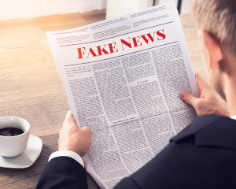
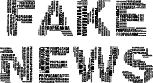
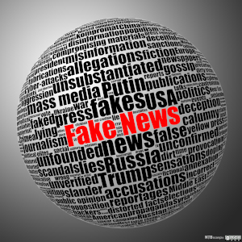
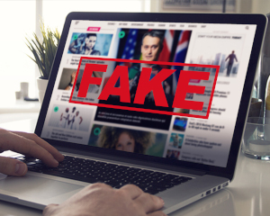
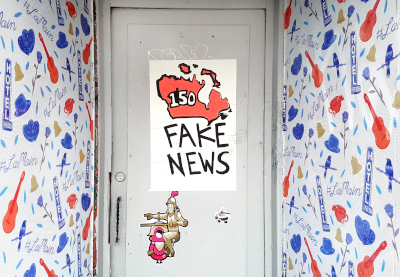
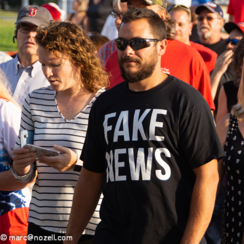

Não é de hoje que mentiras são divulgadas como verdades, mas foi com o advento das redes sociais que esse tipo de publicação popularizou-se. A imprensa internacional começou a usar com mais frequência o termo fake news durante a eleição de 2016 nos Estados Unidos, na qual Donald Trump tornou-se presidente. Fake news é um termo em inglês e é usado para referir-se a falsas informações divulgadas, principalmente, em redes sociais.
Na época em que Trump foi eleito, algumas empresas especializadas identificaram uma série de sites com conteúdo duvidoso. A maioria das notícias divulgadas por esses sites explorava conteúdos sensacionalistas, envolvendo, em alguns casos, personalidades importantes, como a adversária de Trump, Hillary Clinton.
Os motivos para que sejam criadas notícias falsas são diversos. Em alguns casos, os autores criam manchetes absurdas com o claro intuito de atrair acessos aos sites e, assim, faturar com a publicidade digital.
No entanto, além da finalidade puramente comercial, as fake news podem ser usadas apenas para criar boatos e reforçar um pensamento, por meio de mentiras e da disseminação de ódio. Dessa maneira, prejudicam-se pessoas comuns, celebridades, políticos e empresas.
É isso o que acontece, por exemplo, durante períodos eleitorais, nos quais empresas especializadas criam boatos, que são disseminados em grande escala na rede, alcançando milhões de usuários. O Departamento de Justiça Americano denunciou três agências russas, afirmando que elas teriam espalhado informações falsas na internet e influenciarem as eleições norte-americanas de 2016.
Existem grupos específicos que trabalham espalhando boatos. No entanto, não é fácil encontrar as empresas que atuam nesse segmento, pois elas operam na chamada deep web, isto é, uma parte da rede que não é indexada pelos mecanismos de buscas, ficando oculta ao grande público.
Qualquer tipo de informação falsa, da mais simples à mais descabida, induz as pessoas ao erro. Em vários casos, a notícia contém uma informação falsa cercada de outras verdadeiras. É principalmente nessas situações que estão escondidos os perigos das fake news, e suas consequências podem ser desastrosas.
Um caso que ficou conhecido e chegou ao extremo foi o da dona de casa Fabiane Maria de Jesus, que morreu após ter sido espancada por dezenas de moradores de Guarujá, no litoral de São Paulo, em 2014. A revolta dos moradores foi em virtude de informações publicadas em uma rede social, com um retrato falado de uma possível sequestradora de crianças para rituais de magia negra. A dona de casa foi confundida com a criminosa e acabou linchada por moradores.
Outro boato que tomou conta das redes e influenciou diretamente o calendário de vacinação infantil foi o de que algumas vacinas seriam mortais e teriam matado milhares de crianças. O impacto foi tão grande que doenças como o sarampo, do qual o Brasil era considerado livre, voltaram a acometer crianças.
Depois da greve dos caminhoneiros em 2018, que durou 11 dias, fechou rodovias de norte a sul do país e provocou desabastecimento de diversos produtos, alguns boatos de uma nova greve geraram tumulto nas grandes cidades. Em alguns municípios, filas de carros formaram-se em postos de combustíveis, pois as pessoas temiam o aumento do preço e até mesmo a falta do produto.
Para as autoridades, identificar e punir os autores de boatos na rede é uma tarefa muito difícil. No caso do Brasil, a legislação que prevê punição para esse tipo de crime não fala sobre internet, cita apenas rádio e televisão.
Alguns sites de fake news usam endereços e layouts parecidos com os de grandes portais de notícias, induzindo o internauta a pensar que são páginas de credibilidade. Por isso, todo cuidado é pouco na internet.
A maneira mais efetiva de diminuir os impactos das fake news é cada cidadão fazer sua parte, compartilhando apenas aquilo que tem certeza de que é verdade. O ideal é duvidar sempre e procurar informações em outros veículos, especialmente nos conhecidos como grande mídia.
No Brasil, existem agências especializadas em checar a veracidade de notícias suspeitas e de boatos, as chamadas fact-checking. Alguns grandes portais de notícias também criaram setores para checagem de informações.
Sempre veja a data de publicação. Se a suposta notícia não tiver data, faça uma busca na internet para saber quando o fato ocorreu (e se realmente ocorreu). Preste muita atenção na URL, o endereço em que a notícia está de fato publicada.
Historicamente, diversas Fake News são disseminadas com determinados objetivos. As notícias falsas são notícias que aparentam ser verdadeiras e que em algum grau, até poderiam ser verdade, que remontam situações para tentar se mostrar confiáveis.
Fake News (notícias falsas) foi eleita a palavra do ano pelo dicionário inglês da editora Collins e apesar de ter sido popularizada recentemente, de acordo com o dicionário Merriam-Webster, o termo passou a ser utilizado no final do século 19.
O significado do conceito é: informações forjadas, travestidas de verdades. São as notícias que não representam a realidade, mas que são compartilhadas na internet como se fossem verídicas, principalmente através das redes sociais.
As mídias sociais e a inclusão no mundo digital colaboraram para que a prática ganhasse mais evidência, isso porque as informações transitam muito mais rápido e a maioria das pessoas que compartilham essas notícias as reproduzem sem questionamentos.
As fake news podem causar muitos prejuízos. Boatos podem levar as pessoas a tomarem decisões equivocadas, com base em dados enganosos, colocando em risco a própria vida, a vida de terceiros ou a saúde pública.
As redes sociais não são os canais mais confiáveis para se informar. É recomendável obter as informações diretamente de uma autoridade ou especialista no assunto, ou de notícias de um veículo de comunicação tradicional.
E sempre que ler um texto, pergunte:
Quem o escreveu?
As informações têm fontes que podem ser verificadas?
Quando isso foi escrito?
Onde isso está publicado?
Por que eles escreveram isso? 